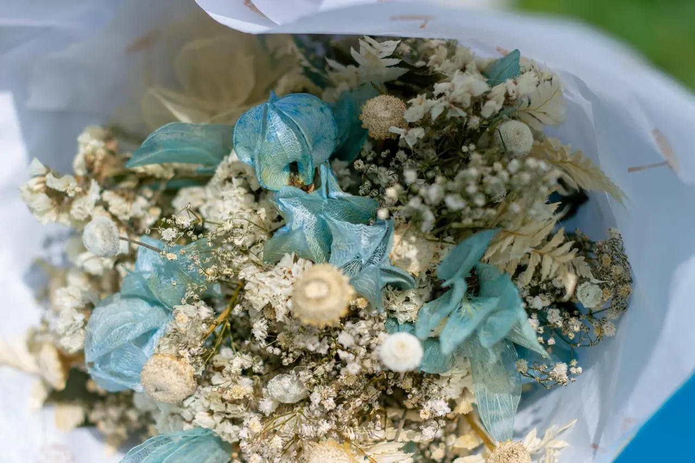
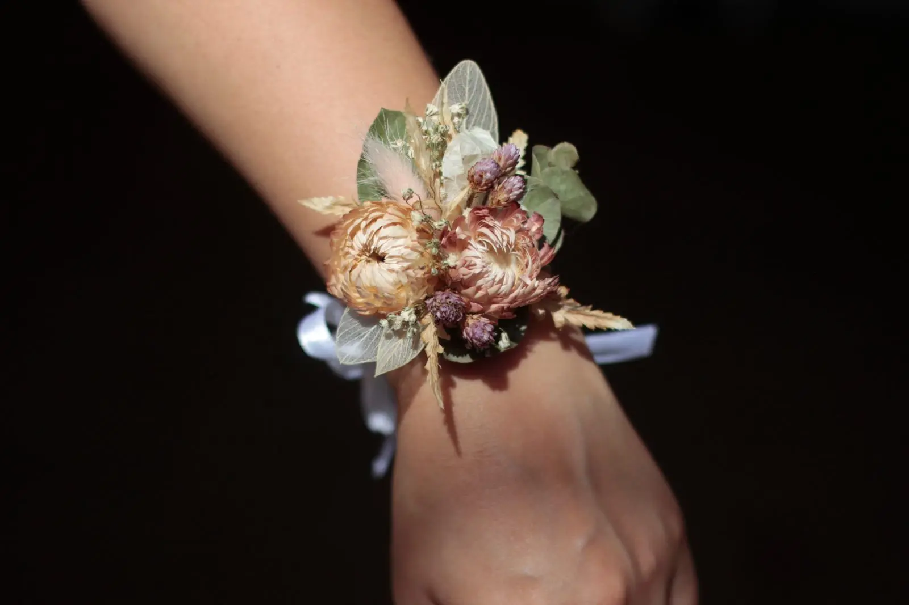

Criações Florais
Peças desenhadas para compor a sua beleza de forma harmônica e sofisticada.

Buquês de Noiva
O protagonista do altar, desenhado na sua paleta de cores.

Acessórios de Cabelo
Tiaras, pentes e presilhas que parecem poesia entrelaçada aos fios.

Lapelas & Corsages
O charme em miniatura para o noivo, padrinhos e madrinhas.

Guirlandas
Peças florais para decorar portas, mesas e cenários com delicadeza.